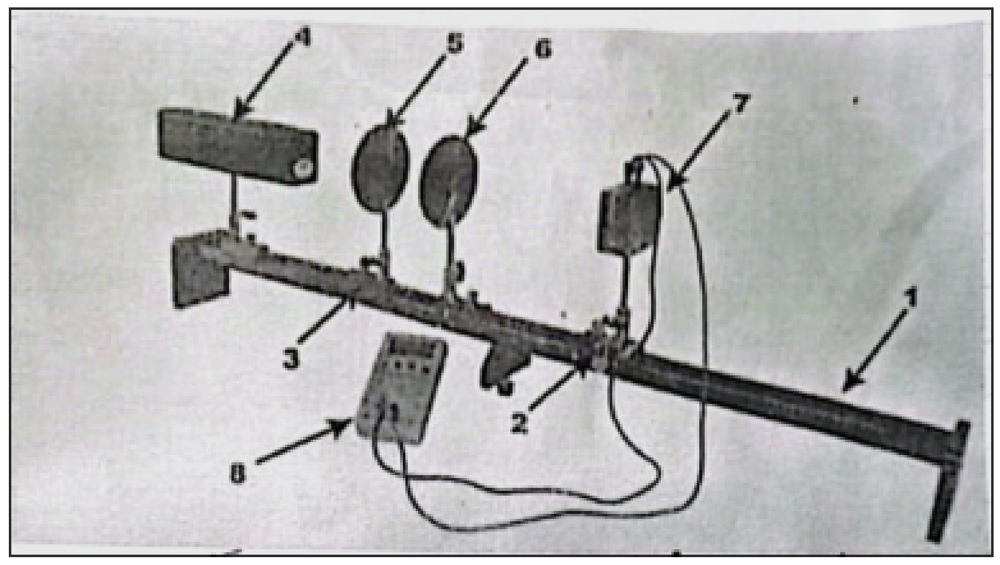
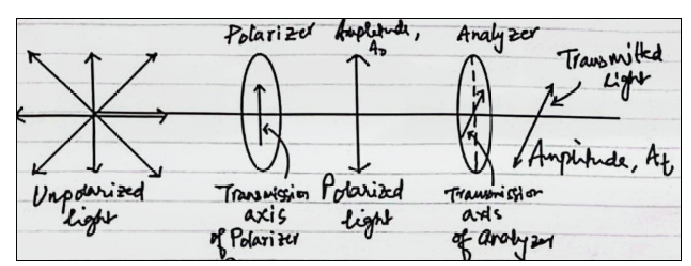
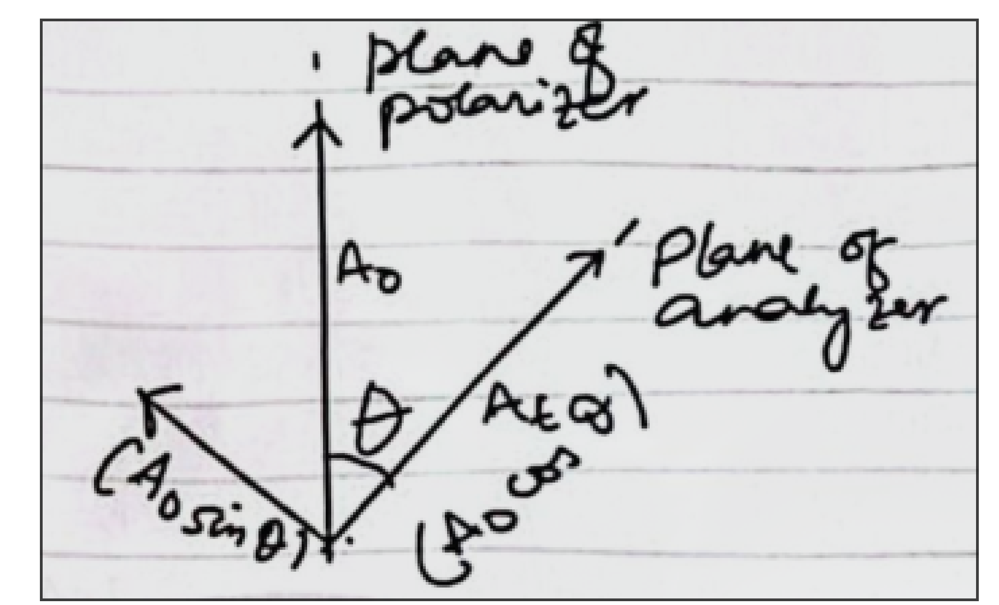

1. Aim
To study the polarisation of light using two polaroids (a polariser and an analyser) and to verify Malus' Law, which states that the intensity of light transmitted through the analyser varies as the square of the cosine of the angle between the transmission axes of the polariser and the analyser.
- Confirm that unpolarised light is converted to plane-polarised light by a polariser.
- Measure the transmitted intensity as the analyser is rotated, and verify It = I0 cos2θ.
- Quantify the agreement between data and theory (linear fit of I vs cos2θ).
2. Apparatus
~1 m long, with scale
for photocell adjustment
for laser / polariser / analyser
monochromatic source, λ = 632.8 nm
first polaroid, in rotatable mount
second polaroid, in rotatable mount
light → current transducer
2000 μA range
The numbering matches Fig. 3 in the Theory section: 1 optical bench, 2 transversal saddle, 3 fixed saddle, 4 He–Ne laser, 5 polariser, 6 analyser, 7 photocell, 8 digital multimeter.
2.1 Experimental set-up

3. Theory
Light is a transverse wave — the electric and magnetic vectors oscillate perpendicular to the direction of propagation. Light from ordinary sources (the sun, a candle, a bulb) is unpolarised: the tip of the electric-field vector traces a random pattern in the plane perpendicular to the propagation direction.
Certain materials, called polaroids, have a transmission axis along which the electric field is allowed to pass; the component perpendicular to that axis is absorbed. The light emerging from a polaroid is plane-polarised, with the electric vector confined to a single plane. Passing this plane-polarised beam through a second polaroid (the analyser) reduces its amplitude further, depending on the angle between the two transmission axes.
3.1 Polarisation through two polaroids (Fig. 1)

3.2 Vector geometry of the analyser (Fig. 2)

If A0 is the amplitude falling on the analyser and At is the transmitted amplitude, then from Fig. 2
The intensity of a wave is proportional to the square of its amplitude, so
Equation (2) is Malus' Law: the transmitted intensity varies as the square of the cosine of the angle between the two transmission axes.
3.3 Verification strategy
Eq. (2) predicts two equivalent signatures in the data:
- A cos2θ curve when It is plotted against θ (peaks at θ = 0°, zero at θ = ±90°, symmetric about 0°).
- A straight line through the origin when It is plotted against cos2θ. The slope of this line is the maximum intensity I0 and the intercept is the background/offset (ideally zero).
Both checks are implemented in the Plot section. A linear regression of I vs cos2θ with slope ≈ I0, intercept ≈ 0, and R2 close to 1, is taken as confirmation of Malus' Law.
4. Procedure
5. Observations
5.1 Setup parameters
Tip: clicking Load sample below fills the table with realistic readings (19 angles, +90° to −90° in 10° steps). You can then edit any cell.
5.2 Observation table — It vs θ
Current in μA. The cos2θ and Mean I = (Imin + Imax) / 2 columns are computed live. The I − Inoise column is what is plotted and fitted.
6. Plots
6.1 It vs θ — cos2θ curve
Measured points and theoretical I0 cos2θ curve. Maximum at θ = 0°, zero at θ = ±90°.
6.2 It vs cos2θ — linear check
A straight line through the origin (slope = I0) confirms Malus' Law. R2 → 1 is the goodness-of-fit.
A linear regression is performed automatically; slope, intercept and R2 are shown in the Result panel.
7. Result
Show all computed values (table of θ, cos2θ, Mean I, I − Inoise)
8. Viva-Voce & Short Questions
9. Precautions
- The analyser and the polariser must be at the same horizontal level as the laser beam; otherwise the beam misses one of the apertures or grazes the polaroid at an angle and the reading drifts.
- Perform the experiment in a darkened room to minimise background current; measure and subtract Inoise before starting the angular sweep.
- The photocell is a sensitive device. Adjust it so that the laser spot falls on the centre of its active area; off-centre illumination gives a non-linear response and reduced current.
- Measure the angle between the analyser and the polariser carefully. A 5° error at θ = 60° already produces a ~15 % error in cos2θ, the worst part of the curve.
- Do not look directly into the laser beam. Even a low-power He–Ne can damage the retina. Keep the beam path above or below eye level whenever possible.
- Allow the laser to warm up for 30 minutes before recording any readings, and avoid touching the polaroid mounts (or breathing on them) during the run — the surface is a soft plastic film.